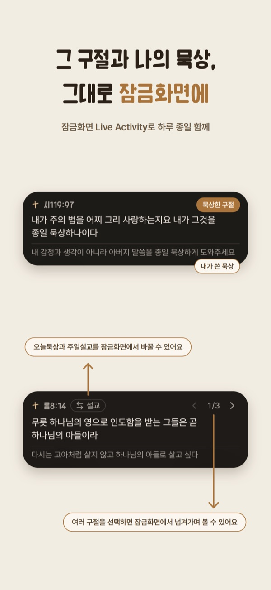

오늘묵상하루종일 하는
말씀묵상
아침에 묵상한 구절과 노트가
잠금화면과 홈 화면 위젯에 하루종일 보여요.
무료 · 광고 없음 · iPhone과 Android
만든 사람의 편지
아침에 묵상하며 받은 은혜가 분명히 있었는데,
밤에 잠들 때까지 한 번도 생각나지 않은 날이 있지 않았나요?
주일에 설교를 들을 때는 정말 그대로 살 수 있을 것 같았는데,
어느새 다음 주일 예배에 앉아 있지는 않았나요?
저도 그랬습니다.
성경 속 사람들처럼 하나님이 나에게도 말씀해 주시길 바랐지만, 이미 주신 말씀인 성경은 늘 휘발되는 것 같았습니다.
이 앱이 모든 것을 해결해 줄 수는 없겠지만, 애쓰고 시도하는 여러분과 성령님이 함께하시길 바랍니다.
최지섭오늘묵상 개발자
아침에 묵상하고,
하루종일 봐요
- 본문 읽기
코스를 고르면 날마다 그날 본문이 보여요.
- 구절 담기
본문에서 구절을 누르면 노트에 담겨요. 느낀 점도 같이 적어요.
- 하루종일 보기
휴대폰을 볼 때마다 담은 구절과 노트가 잠금화면과 위젯에 보여요.

오늘 묵상부터
책 묵상까지
오늘 묵상
매일 묵상 코스나 성경 코스를 고르면 날마다 그날 본문을 묵상해요.
사용법 보기설교 묵상iPhone
교회 코드를 넣으면 교역자가 올린 주일 설교를 받아 묵상해요.
사용법 보기자유 묵상
코스 없이 읽고 싶은 본문을 골라 묵상해요.
사용법 보기책 묵상곧 나와요
읽는 책의 글과 성경 구절을 장마다 카드로 적어요.
사용법 보기며칠 연속으로 했는지는 세지 않아요.